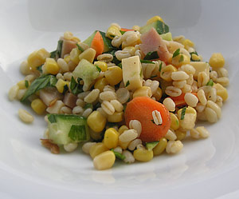

Ebly Salat
4,5 von 6Ebly gemäss Packungsbeilage zubereiten (10 Minuten im kochenden Salzwasser al dente garen). Unter fliessendem kalten Wasser abschrecken und abkühlen lassen, beiseite stellen. Beliebiges Gemüse (in unserem Fall: Gurke, Karotten, Frühlingszwiebel, Mais, Tomaten), Käse und gekochter Schinken in kleine Würfel schneiden und zum Ebly geben. Peterli und Stangensellerie-Grün mit einer französischen Salatsauce mischen und darüber geben. Eignet sich hervorragend als Beilage zum Grill.
